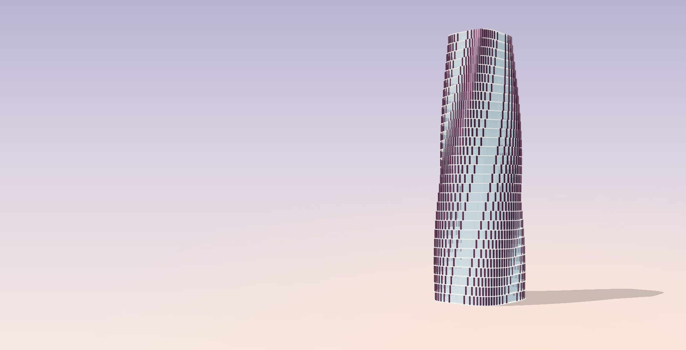
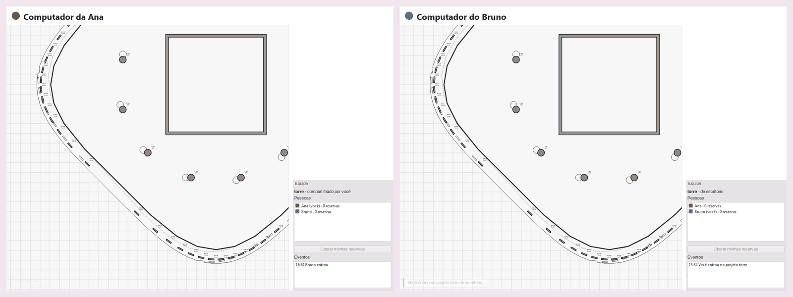
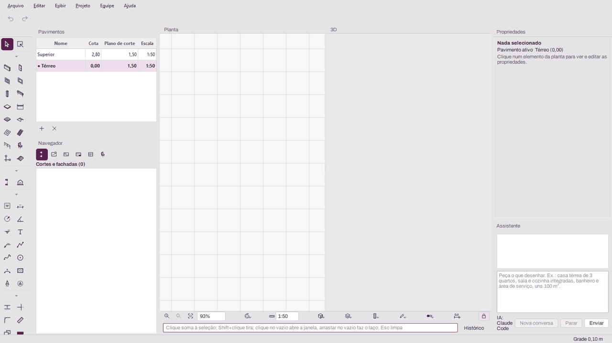
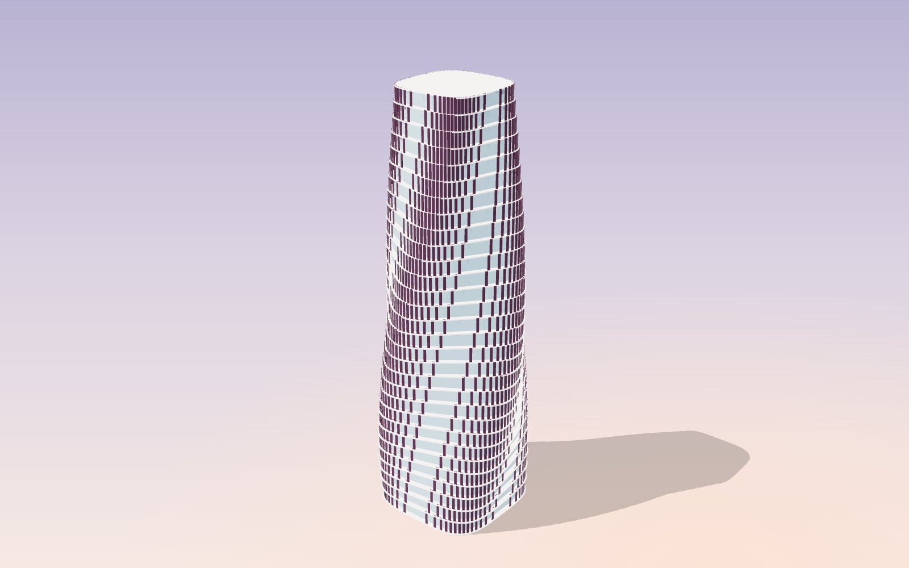
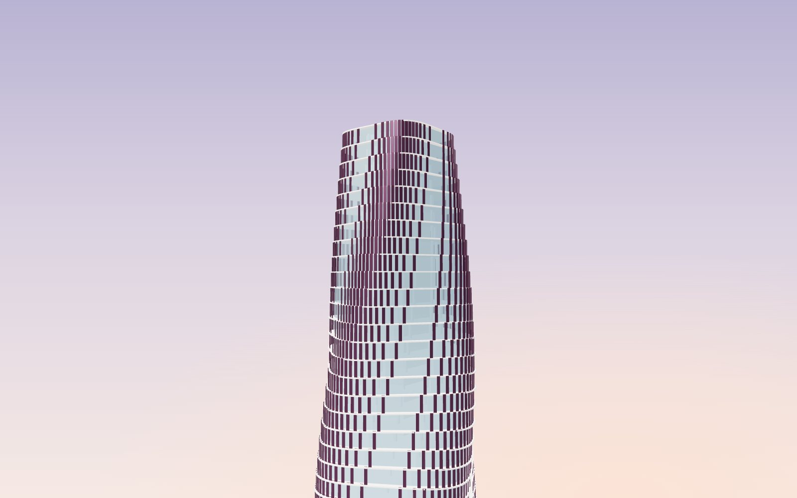
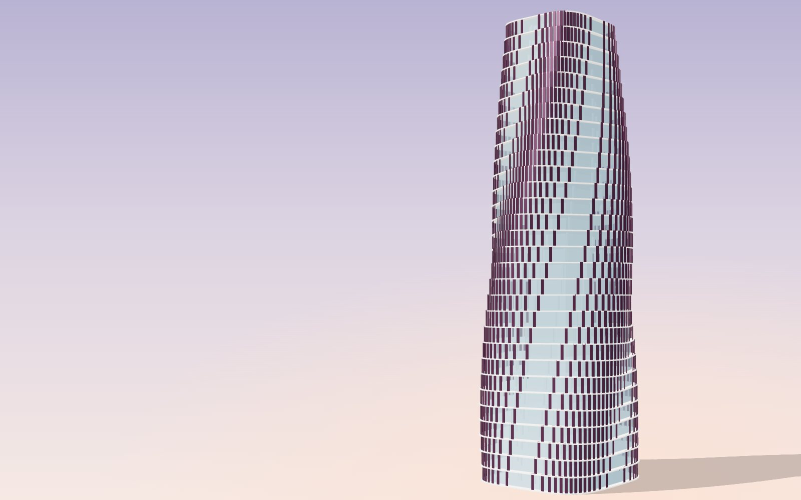
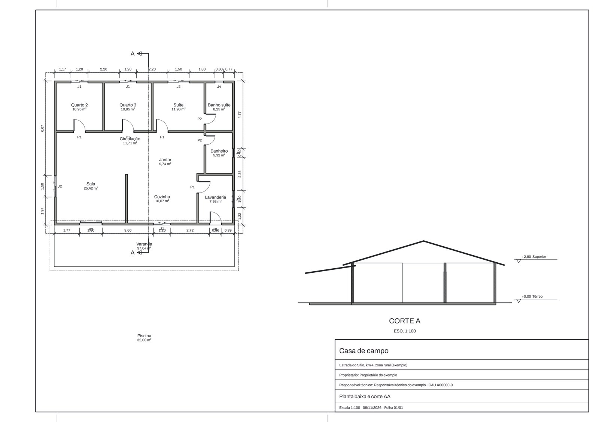
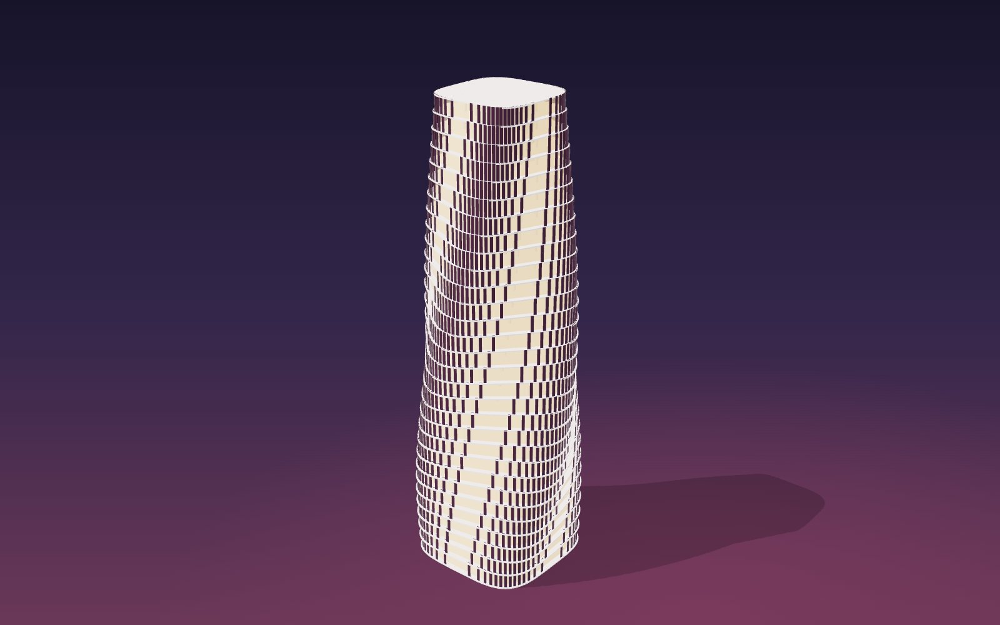

Objetos com fórmulas
Objetos que se ajustam sozinhos
Descreva a peça uma vez, com parâmetros, fórmulas e listas de escolha. A cama, a bancada ou a árvore se ajustam a cada medida.

Gratuito, de código aberto, em português, e com o IFC 4.3 como arquivo do projeto. Versão 0.0.1, em desenvolvimento.
Torre de 30 pavimentos modelada no BrasBim. Arraste para girar.
Duas ou mais pessoas editam o mesmo projeto, cada uma no seu computador. Cada alteração chega a todos na hora, pela rede do escritório, sem servidor para instalar e sem nuvem.

Um computador compartilha o projeto pelo menu Equipe. Os outros acham o projeto na rede e entram. O arquivo fica no escritório.
Quem edita vê a mudança na mesma hora, e ela segue para todos, na mesma ordem para todo mundo.
Quem começa a editar um elemento fica com ele. Ninguém esbarra no trabalho do colega.
Precisa de algo reservado? Peça a liberação e o colega responde com um clique no painel Equipe.
Em teste, chega na próxima versão
Escreva o que precisa no painel Assistente e veja a planta e o 3D se formarem. O resultado é um estudo feito com paredes, portas e ambientes de verdade, que você edita como qualquer outro desenho e desfaz num passo só.
A IA é a sua, instalada no seu computador e conectada por um protocolo aberto (MCP). O BrasBim não embute nem revende IA.


Lajes, pele de vidro, brises, pilares e núcleo, gerados pelos mesmos comandos que a interface usa. O resultado é um IFC 4.3 que abre em qualquer programa BIM.

O modelo sai em glTF e OBJ, com as cores dos materiais, pronto para renderizar ou mostrar na web, como a torre desta página. Em teste.
Descreva a peça uma vez, com parâmetros, fórmulas e listas de escolha. A cama, a bancada ou a árvore se ajustam a cada medida.
Recorte, una ou fique só com a parte comum entre dois elementos. O resultado acompanha as mudanças de cada um.
Comandos e apelidos em português, coordenadas x;y e histórico, para quem prefere digitar a clicar.
Exporta IFC 2x3 e IFC 4 para quem ainda não lê o 4.3. Em teste.
O BrasBim é um projeto público, com código no GitHub e licenças GPL e LGPL. Não tem assinatura, não tem limite de instalações e ninguém pode fechá‑lo.
O código pode ser lido, auditado e melhorado por qualquer pessoa. Ver as licenças
O projeto é salvo direto em IFC 4.3, o padrão aberto da buildingSMART (ISO 16739). Não existe formato próprio escondido: qualquer programa BIM abre o seu trabalho, hoje ou daqui a vinte anos.
Interface em português, metro e vírgula decimal, e documentação orientada pelas normas brasileiras. Do modelo sai o projeto legal, com as cores da prefeitura e o quadro de áreas calculado.

Elementos de verdade, com tipos e camadas, que se ligam sozinhos.

Plantas, cortes e fachadas saem do modelo e acompanham cada mudança. A prancha ao lado é a casa feita pelo Assistente, cotada e exportada em PDF.

Objetos paramétricos, scripts em Python e trabalho em equipe.
Assistente com IA, peças do projeto legal na prancha, memorial descritivo, elevação interna, perspectiva na prancha e testes do macOS em Macs de verdade.
Acessibilidade pela NBR 9050, orçamento com SINAPI, BCF, IDS, georreferenciamento e API para plugins.
Abrir formatos fechados de outros programas BIM. A troca é sempre por IFC.
Arquitetos, engenheiros, estudantes e programadores. Cada recurso nasce de uma especificação revisada e tem teste que confere o IFC gerado.
BrasBim 0.0.1, em desenvolvimento. Gratuito, sem cadastro e sem licença.
git clone https://github.com/Ottopaz/BrasBim.git
cd BrasBim
python -m venv .venv
.venv\Scripts\activate # Linux e macOS: source .venv/bin/activate
pip install -e ".[dev,ui]"
brasbim